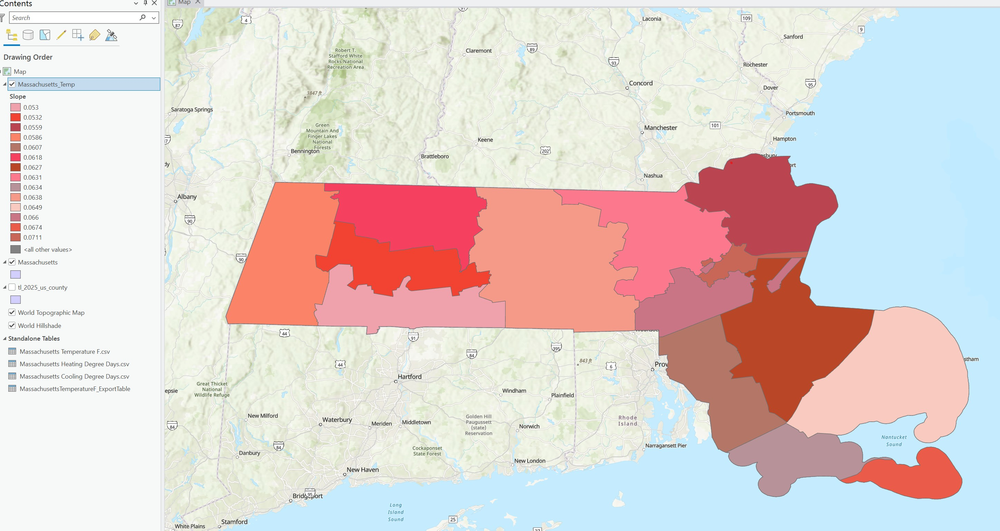

Final Portfolio draft
body{
font-family: Times New Romn serif;
margin 20px;
line height 1.6;
max widith 990px;
}
p{
display: block;
margin 15px 0;
}
img {
max-width: 100%;
height: auto;
margin: 10px 0;
border: 1px solid #ddd;
}
title {
color: #333;
}
This is a Storymap I did earlier in the semester. Alas, it’s not the strongest of my assignments. But I thought it had the most potential in terms of growth and applying the feedback I received on this assignment to improve it.
When I worked on this assignment, I was trying to use it as a stepping-stone to a larger project idea I had. I wanted to show changes in temperature in parts of Massachusetts and then compare those changes to the population.
As an undergraduate student at SUNY ESF, for my capstone project, I extracted precipitation data for the counties in New England from a NOAA database and showed how and where precipitation had changed over a 90-year period.
And I compared my ArcGIS maps and animations to static graphs created by a senior NOAA hydrologist showing the same information on a state-wide basis. My goal was to show that ArcGIS maps improve the communication of significant data to non-scientist stakeholders.
My idea was to use the same NOAA database to review temperature changes and heating/cooking degree days in the state of Massachusetts. I would then use my original assignment to compare population to these
weather changes that affect what stakeholders pay for heating and cooling during the years, whether there has been a significant change of some kind between 1980 and 2019.
My idea was to use the same NOAA database to review temperature changes and heating/cooking degree days in the state of Massachusetts. I would then use my original assignment to compare population to these weather changes
that affect what stakeholders pay for heating and cooling during the years, whether there has been a significant change of some kind between 1980 and 2019.
This is where my storymaps of temperature, heating/cooling degree days will be. I intend to add commentary on the changes vs the populations in those counties. My impression from my original assignment’s maps, for example, is that the western counties have not experienced as much change
in population as the eastern counties. While creating my maps for precipitation, I noted that the southeastern counties of Massachusetts had experienced the greatest change in precipitation over that timeframe. I will be drawing similar conclusions in these maps regarding the changes from 1980-2019.
Here is a static map of one of the pieces I am planning to add to the map.

Here is part of my Production Assignment that I am planning on using. I am planning on adding another hotspot analysis map to it, this time to show the change in population from 1980 to 2020.